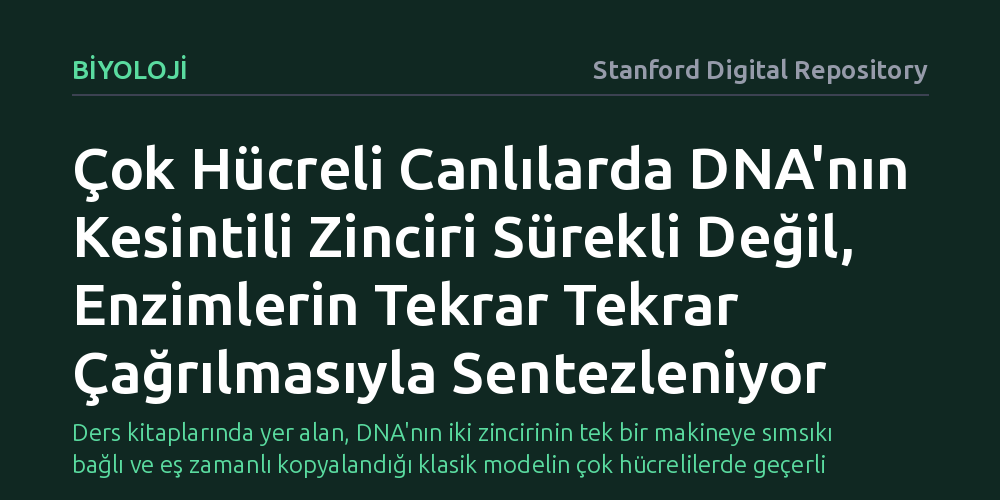

BIYOLOJI · Stanford Digital Repository · 2026-10-23
Araştırmacılar çok hücreli canlılarda DNA kopyalanırken kesintili zincir sentezinin kopyalama makinesiyle nasıl koordine edildiğini tek molekül görüntülemeyle inceledi. Bulgular, polimeraz enzimlerinin makineye sabit kalmadığını, kesintili zincirin enzimlerin tekrar tekrar çağrılmasıyla parça parça sentezlendiğini gösterdi.
Ders kitaplarında yer alan, DNA'nın iki zincirinin tek bir makineye sımsıkı bağlı ve eş zamanlı kopyalandığı klasik modelin çok hücrelilerde geçerli olmadığını ortaya koyuyor.

Hücrelerimiz her bölünme öncesinde tüm genetik mirasını kopyalamak zorundadır. Ancak DNA çift sarmalını oluşturan iki iplikçik zıt yönlere baktığı için kopyalama makineleri iki zincirde aynı şekilde çalışamaz. Bir zincir (kesintisiz zincir) kopyalama çatalı açıldıkça aralıksız üretilirken, diğer zincir (kesintili zincir) ters yönde ve küçük parçacıklar halinde basamak basamak sentezlenir.
Yıllardır biyoloji eğitiminde öğretilen yerleşik model, bakteriler üzerinde yapılan öncü çalışmalara dayanıyordu. Bu klasik görüşe göre "replizom" adı verilen dev kopyalama kompleksi, her iki zinciri kopyalayan polimeraz enzimlerini tek bir fiziksel gövdede sımsıkı bir arada tutar ve iki zincirin sentezi kusursuz bir eş zamanlılıkla ilerler. Ancak çok hücreli karmaşık canlılarda bu sürecin aynı katı mekanik koordinasyonla mı yoksa daha esnek bir yapıyla mı yürüdüğü temel bir soru işaretiydi.
Araştırmacılar bu temel mekanizmayı aydınlatmak amacıyla tek molekül görüntüleme (single-molecule imaging) tekniğine başvurdu. Bu yöntem, biyokimyasal reaksiyonları tüp içindeki milyonlarca molekülün ortalamasını alarak incelemek yerine, kopyalama yapan tekil molekülleri gerçek zamanlı olarak mikroskop altında izleme imkânı sunar.
Deneylerde çok hücreli canlı sistemlerinden elde edilen replikasyon düzeneği kullanıldı. Kesintili zincirin basamak basamak üretilmesini sağlayan Polimeraz Alfa (Pol α) ve Polimeraz Delta (Pol δ) enzimlerinin kopyalama çatalındaki anlık hareketleri, makineye bağlanma ve ayrılma dinamikleri moleküler çözünürlükte takip edildi.
Elde edilen sonuçlar klasik beklentiyi kökten sarstı: Çok hücrelilerde kesintili zincir sentezinin "prosesif" (makineye kalıcı biçimde bağlı) değil, "distribütif" yani kesintili ve serbest bir düzende işlediği görüldü. Pol α ve Pol δ enzimleri kopyalama makinesine sürekli yapışık kalmıyordu.
Bunun yerine her bir yeni DNA parçasının (Okazaki parçası) yapımında bu enzimler ortama dağılıp kopyalama bölgesine tekrar tekrar çağrılıyordu. Araştırmacılar metazoan kesintili zincir sentezinin "sabit bir replizom birlikteliği yerine Pol α ve Pol δ enzimlerinin tekrarlayan katılımlarına dayandığını" belirterek iki zincirin üretiminin birbirinden fiziksel olarak ayrıldığını saptadı.
Kesintisiz ve kesintili zincir sentezinin birbirinden bağımsızlaşması, kopyalama makinesinin zannedildiğinden çok daha esnek bir çalışma prensibine sahip olduğunu gösterir. Kesintili zincirde yaşanabilecek olası bir duraksama veya DNA hasarı durumunda, iki zincir birbirine katı biçimde kilitli olmadığı için kopyalama çatalı tamamen kilitlenmek zorunda kalmaz.
Bu bulgu, çok hücreli canlıların genom kopyalama stratejisinin bakteriyel atalarından evrimsel süreçte nasıl farklılaştığını kanıtlıyor. Gelecekte DNA kopyalama aksaklıklarına bağlı genetik hastalıkların ve kanser biyolojisinin incelenmesinde, artık katı ve tek parça bir makine değil, enzimlerin dinamik biçimde girip çıktığı bu esnek model dikkate alınacak.